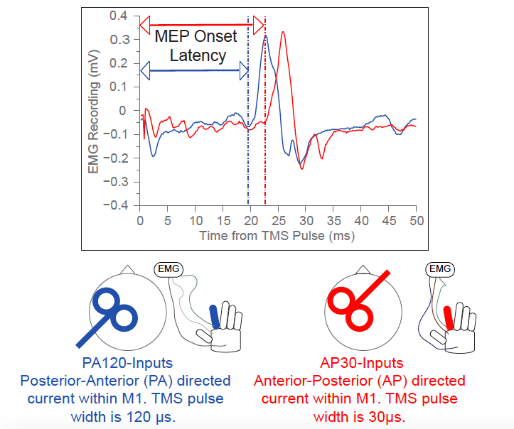
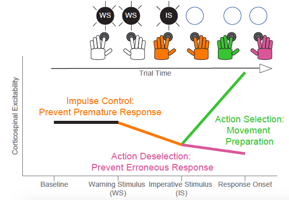
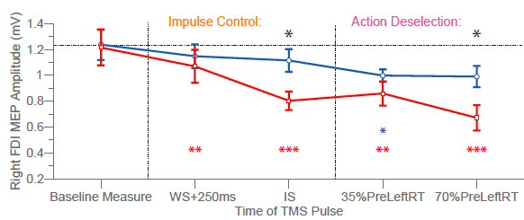

Motor Preparation
Transcranial magnetic stimulation (TMS) is an important tool for studying brain activity in humans and patients with neurological conditions. A TMS pulse applied over a person's scalp can stimulate neurons in the motor cortex (M1) resulting in muscle contraction. However, the pattern of stimulation is relatively imprecise and it is unclear exactly which neurons are activated.
Rather than stimulating the motor output axons directly, TMS over the motor cortex is thought to activate synaptic inputs to corticospinal neurons (CSNs); and studies have suggested that different directions of TMS may be able to activate different subsets of inputs. Adjusting TMS
pulse-width and direction of current induced in the brain allows specific targeting of two CSN-inputs: PA120-inputs and AP30-inputs:

These CSN-inputs have different physiological properties, but as part of my BSc dissertation project I explored their behavioral relevance in a choice reaction time task:

TMS pulses were delivered at different points of the trial to measure neuronal excitability at different stages of motor preparation:

These results suggested that by varying the TMS orientation, you could target different behaviourally relevant inputs. AP30-inputs appeared to be more sensitive indicators of processes that prevent
premature release of a movement, or suppress unchosen movement options.
To learn more about this work, please see the relevant publication:
Hannah, R., Cavanagh, SE., Tremblay, S., Simeoni, S., & Rothwell, JC. (2018) - Selective suppression of local interneuron circuits in human motor cortex contributes to movement preparation - Journal of Neuroscience [Link]